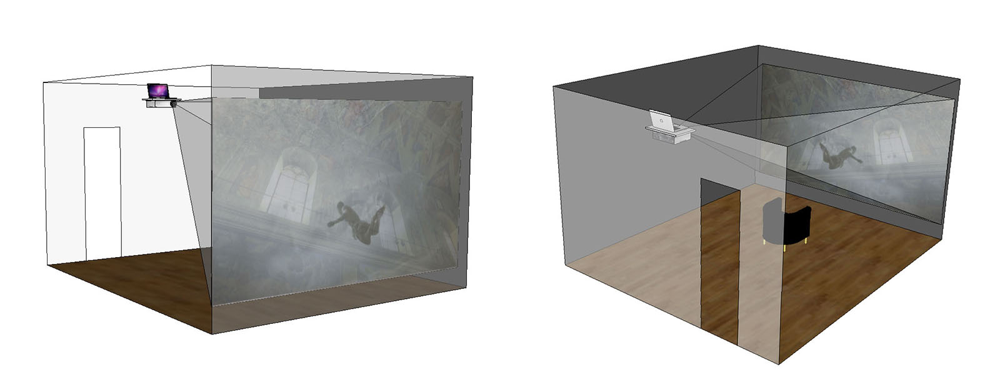
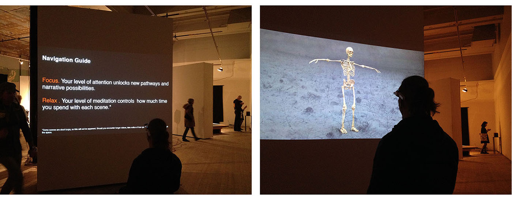
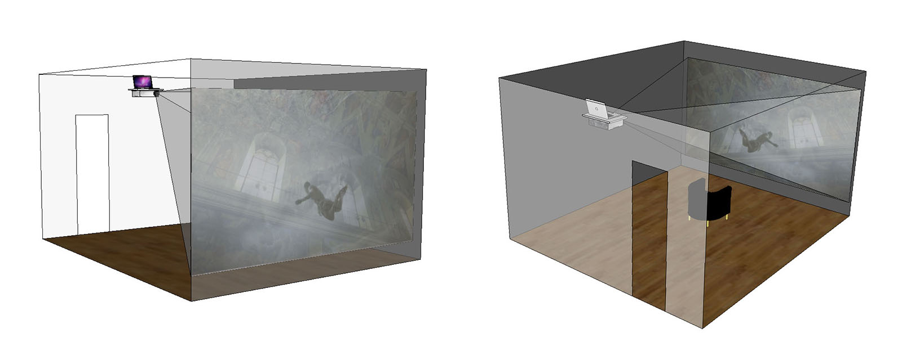
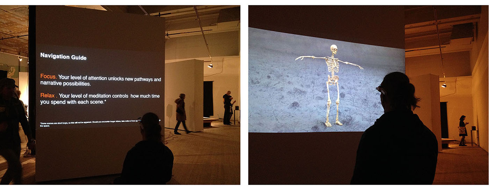

2.2 digital (in)coherence: baroque re-visions
“What about the ground realities of life and death, in a world that has instituted the shape-shifting potential of the virtual as its dominant order?” 1
“The Baroque solution is the following: we shall multiply principles – we can always slip a new one out from under our cuffs – and in this way we will change their use.” 2
The dilemma set forth by 2nd order cybernetics comes from the realization that the transformational shift to a machine-networked society would yield and give access to “infinite” information, enabling all theories to be substantiated, thus making all substantiated theories true. 3 On one hand, what this alludes to is that “truth does not make sense; it exceeds meaning and exceeds measure. It exceeds all regimens of truth… The anthropologist, remember, does not find things; s/he makes them. And makes them up.” 4 Of course, this is not literally true; it is a problem with the language of logic (or the logic of language) closing in on itself, the black box. The subtext, on the other hand, is where the truth lies; making up “true” stories is easy, the hard part is parsing out the ones that are actually happening, for real.
In this age of global networks, global consciousness and global terror, the accelerating, perpetual loss of the “ground” of reality is no longer just a concern for cybernetic theory, postmodern skepticism or nihilism in its extreme form (i.e. grasping for a theory of absolute nothing-ness to replace the rejection/loss of absolute something-ness). Instead it is an all pervasive, all inclusive collapse – a form of nihilism Baudrillard describes as: “one of transparency and […] in some sense [one] more radical, more crucial than in its prior and historical forms, because this transparency, this irresolution is indissolubly that of the system, and that of all the theory that still pretends to analyze it.” 5
Today’s crisis is that every (ontological) system is being disrupted continuously, indefinitely, clashing in an “[…] excess of principles, a hubris of principles, and a hubris inherent to principles”. i As the once clear, distinct narratives used to cohere collective identities lose their center and frames of reference, new narratives made up of their remnants emerge to take their place; while the old narratives, hollowed out, continue anyway, regardless of whether or not they can substantiate their claims. It is as if the structure of the story and the promise of a deliverance are the only ingredients necessary to sustain the façade: no logic, no substance, no sense required– literally, a total rejection of the affective body.
Deleuze writes of the advent of the Baroque as an inevitable consequence of a similarly destabilizing crisis of such magnitude and depth occurring within the dominant theological systems of the time:
A psychotic episode had to take place. A crisis and collapse […] had to take place. That is where the Baroque assumes its position: Is there some way of saving the theological ideal at a moment when it is being contested on all sides, and when the world cannot stop accumulating its ‘proofs’ against it, ravages and miseries, at a time when the earth will soon shake and tremble…? 6
Today, it is within such chaotic unravelings that the politics of fear and the promise of an Apocalypse returns.
[incomplete]
 


